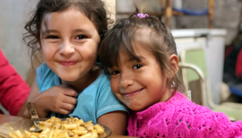
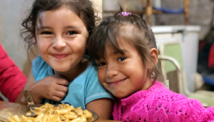
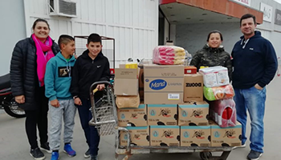
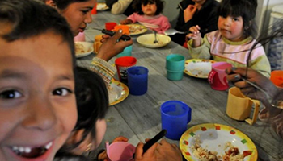
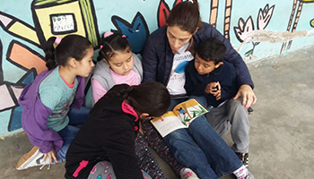
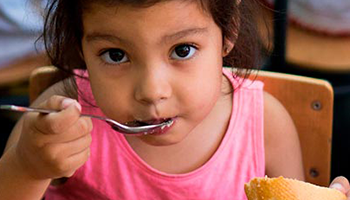
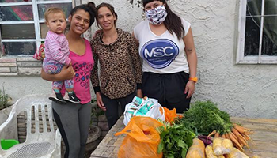

EL CAMPITO
Casa del niño y la niña
Avellaneda, GBA.
Desarrolla su labor con niñas/os de 6 a 14 años, en la cual participan de talleres, apoyo escolar,comedor y diversas actividades.
Somos una plataforma digital que permite la conexión entre organizaciones sociales y personas que quieren ser parte activa de la sociedad ayudando a quienes más lo necesitan.
Para ello, facilitamos la comunicación directa entre quienes desean dar y los centros de recepción de donaciones más cercanos a su domicilio.
Contamos con vos!

Casa del niño y la niña
Avellaneda, GBA.
Desarrolla su labor con niñas/os de 6 a 14 años, en la cual participan de talleres, apoyo escolar,comedor y diversas actividades.
Jardín comunitario
Sarandi, GBA
Desarrolla su labor con niñas/os de 6 a 14 años, en la cual participan de talleres, apoyo escolar,comedor y diversas actividades.
Hogar para mujeres
Montegrande, GBA
Desarrolla su labor con niñas/os de 6 a 14 años, en la cual participan de talleres, apoyo escolar,comedor y diversas actividades.
Asociación Civil
Avellaneda, GBA.
Desarrolla su labor con niñas/os de 6 a 14 años, en la cual participan de talleres, apoyo escolar,comedor y diversas actividades.
Comedor barrial
Almirante Brown, GBA
Desarrolla su labor con niñas/os de 6 a 14 años, en la cual participan de talleres, apoyo escolar,comedor y diversas actividades.
Fundación el arte de vivir
La plata, Buenos Aires
Desarrolla su labor con niñas/os de 6 a 14 años, en la cual participan de talleres, apoyo escolar,comedor y diversas actividades.
Casa del niño y la niña
Avellaneda, GBA.
Desarrolla su labor con niñas/os de 6 a 14 años, en la cual participan de talleres, apoyo escolar,comedor y diversas actividades.
Completá el formulario con tu consulta y uno de nuestros voluntarios te responderá a la brevedad.
¡Muchas gracias por tu tiempo!